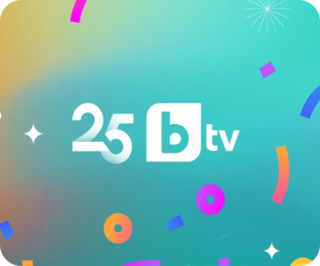
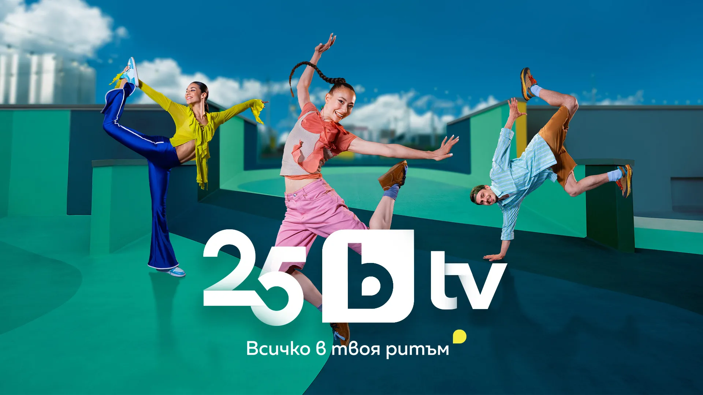
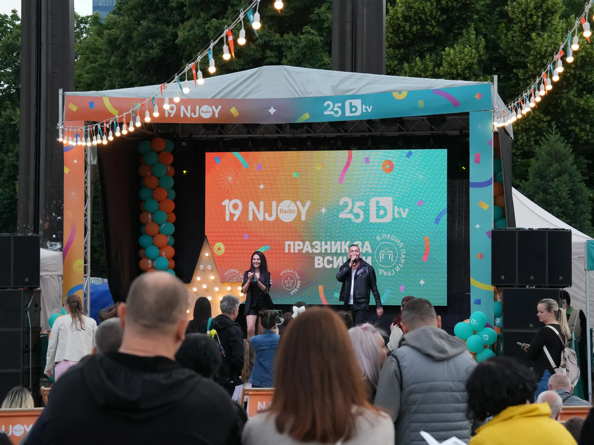

25 years – trust, quality journalism and entertainment
As is tradition, bTV celebrates its birthday on 7 June. On this date in 2000, Bulgaria's first private national television channel began broadcasting.
With a revamped graphic design, bTV Media Group celebrates 25 years on air and reaffirms its constant commitment to innovation, a modern look and an even stronger connection with viewers.


As is tradition, bTV celebrates its birthday on 7 June. On this date in 2000, Bulgaria's first private national television channel began broadcasting.

One of the most inspiring shows on Bulgarian television – “Home Makeover” received a special certificate “Courage, Solidarity, Social Work” during the third edition of the World Social Workday Forum.

This anniversary and re-launch aren’t just about “Traitors.” bTV has also teased additional programming for the autumn season, including anticipated entertainment performances and a focus on business news.
Nearly 18% more than the next television station in the ranking